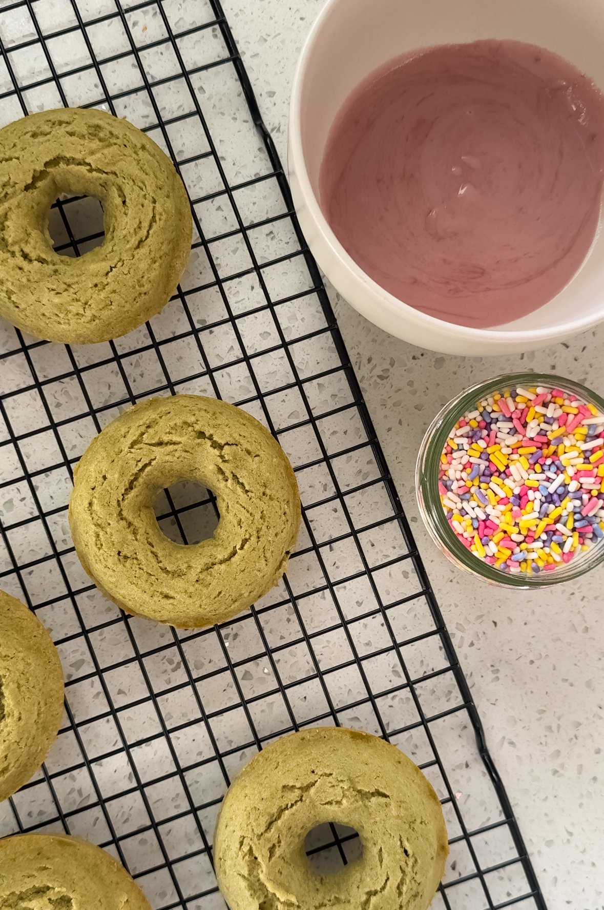
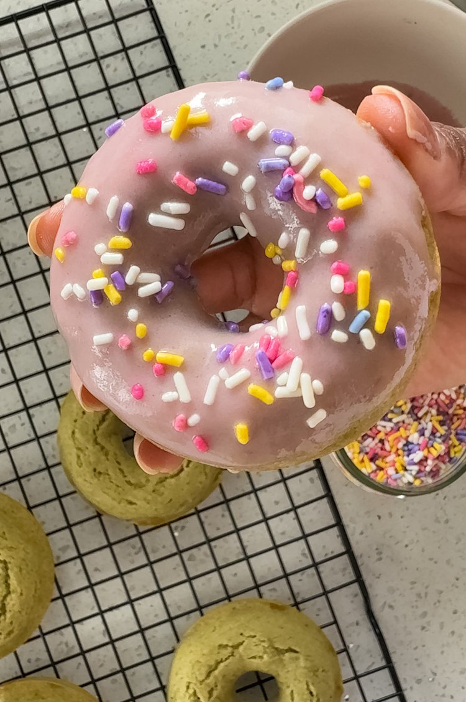

I don’t drink coffee, but I love drinking tea. Matcha, specifically, is one of my favorite teas. Because I love to drink matcha so much I also love to bake with it, and these baked gluten free matcha donuts are another fun dessert that features this amazing green ingredient.
In my opinion, baking donuts at home is so much easier than deep frying them. Not only are baked donuts healthier than traditional fried donuts, but the cleanup is not as intense. Most importantly, the flavor of these matcha gluten free donuts is out of this world, so you won’t even care that they’re not fried!
Lastly, these matcha donuts are topped with an icing that’s powdered sugar free! The main ingredients of this icing is coconut butter, coconut milk, maple syrup, and berries.

INGREDIENTS
Donut
gluten-free flour
matcha powder: use a high quality powder
cane sugar
baking powder
non-dairy milk + apple cider vinegar
vanilla extract
Egg
Coconut Oil
Icing
Coconut Butter
Coconut Milt
maple syrup
strawberries, or raspberries
Vanilla

HOW TO MAKE THEse Gluten Free Donuts
Donuts
Preheat oven to 425 F. Lightly grease a donut pan with cooking spray and set aside.
In a large bowl, combine the gluten free flour, cane sugar, baking powder, matcha powder, and salt.
In a separate bowl, whisk together the non-dairy buttermilk, egg, coconut oil, and vanilla extract.
Pour the wet ingredients into the dry ingredients, and stir the mixture together until fully incorporated.
Spoon the batter into the donut pan, filling them about 3/4 of the way.
Bake for about 8-10 minutes, until a toothpick inserted in the center comes out clean.
Cool donuts completely on a wire rack before dipping them in icing.
Icing
Heat the coconut butter, milk, vanilla, and maple syrup in a small saucepan over medium low heat.
Bring to a low simmer and continue to stir until thickened, about 5-10 minutes.
Mash your berries and press them through a sieve into the icing mixture.
Stir in the berries.
Allow icing to cool slightly before dipping each donut into the icing. Top with sprinkles!